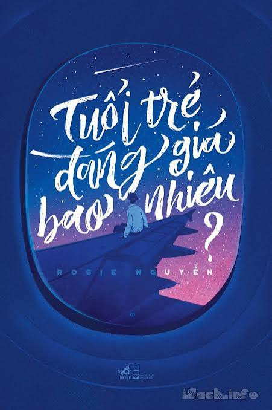
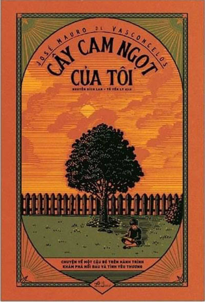
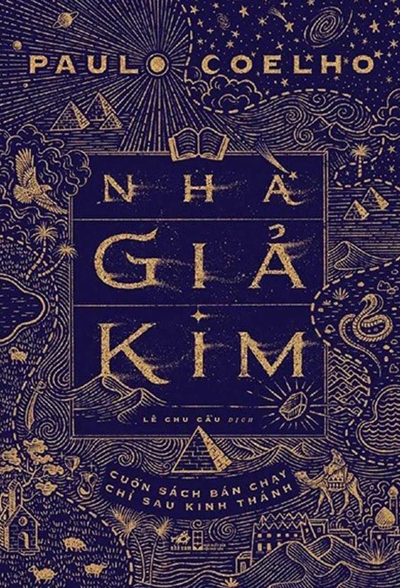

Kệ Sách Tuyển Chọn Cho Tuổi 18
Rê chuột vào từng cuốn sách trên kệ để xem nổi bật:

Tuổi trẻ đáng giá bao nhiêu?
Tác giả: Rosie Nguyễn
Chia sẻ gần gũi về cách tự học, đọc sách và vượt qua sự chênh vênh tuổi trẻ.
- Phù hợp cho bạn nào hay trì hoãn.
- Nhiều mẹo học tập áp dụng được ngay.

Cây cam ngọt của tôi
Tác giả: José Mauro de Vasconcelos
Câu chuyện trong trẻo nhưng đầy xúc động về cậu bé Zezé thông minh và giàu tình cảm.
- Văn phong nhẹ nhàng, rất dễ cuốn.
- Giúp ta biết trân trọng người thân quanh mình.

Nhà giả kim
Tác giả: Paulo Coelho
Hành trình vượt sa mạc đi tìm kho báu của chàng chăn cừu Santiago đầy dũng cảm.
- Ngắn gọn, đọc hết trong 2 buổi tối.
- Tiếp thêm động lực theo đuổi ước mơ.